Internship – BMKG
BMKG Stasiun Klimatologi Lampung
Conducted daily weather observations, processed rainfall data, and participated in the weather forecast verification process.
Activity Documentation
Swipe or use the arrows

WELCOME TO MY PORTFOLIO
A Mathematics graduate from the Institut Teknologi Sumatera with a strong interest in data analysis, statistics, mathematical modeling, and computational methods.

INTRODUCTION
I am a graduate of the Mathematics Study Program, Faculty of Science, Institut Teknologi Sumatera, with a focus on data analysis, statistics, time series analysis, optimization, and computational methods.
I have experience as a laboratory teaching assistant, tutor, and intern at the BMKG Lampung Climatology Station. These experiences have strengthened my analytical, communication, teamwork, and problem-solving skills.
ACADEMIC BACKGROUND
Bachelor of Mathematics (S.Mat.)
Faculty of Science | 2022–2026
GPA: 3.36 / 4.00
Areas of Expertise: Statistics, Data Analysis, Time Series Analysis, Optimization, and Mathematical Modeling.
Implementation of SARIMA Method for Rainfall Prediction as a Basis for Planting Calendar Recommendations
View Undergraduate Thesis →PROFESSIONAL JOURNEY
BMKG Stasiun Klimatologi Lampung
Conducted daily weather observations, processed rainfall data, and participated in the weather forecast verification process.
LEADERSHIP & INVOLVEMENT
Himpunan Mahasiswa Matematika, Institut Teknologi Sumatera
HIMATIKA ITERA
Managed departmental administration, prepared and organized documents, recorded meeting discussions, and supported coordination of departmental activities.

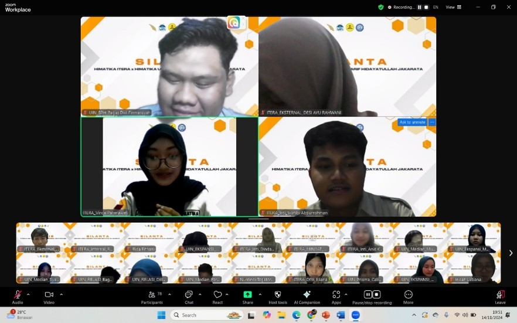
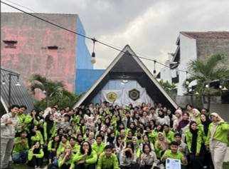
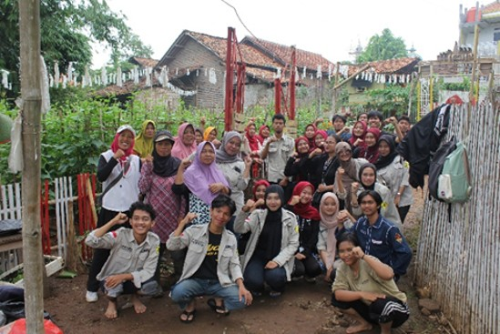
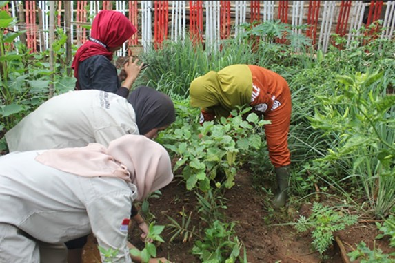
HIMATIKA ITERA
Participated in organizational activities and carried out responsibilities as a DPA (Dewan Perwakilan Anggota) staff member.
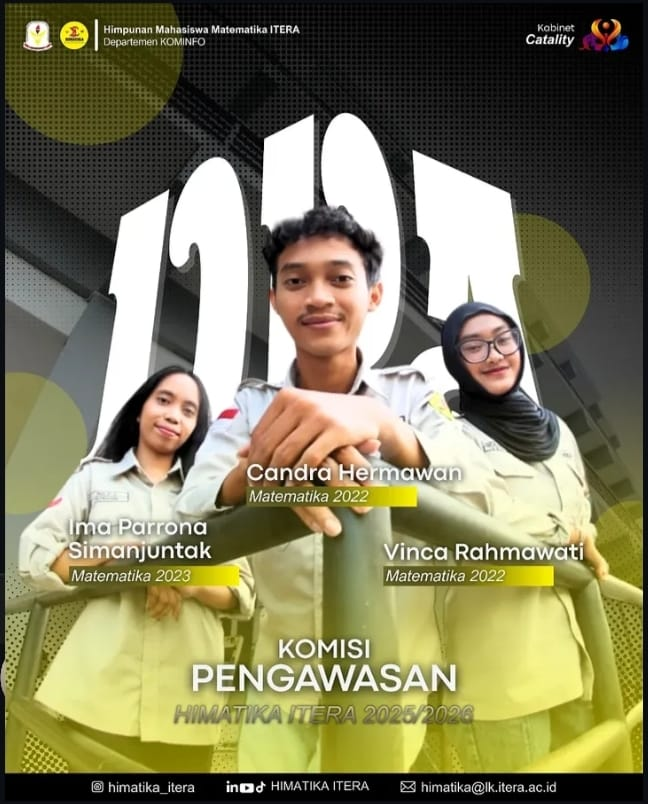
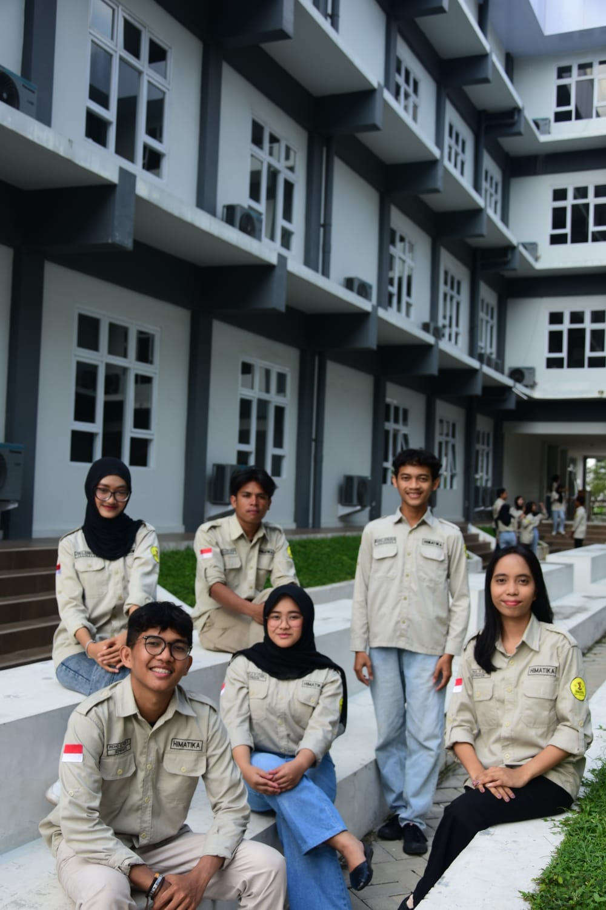
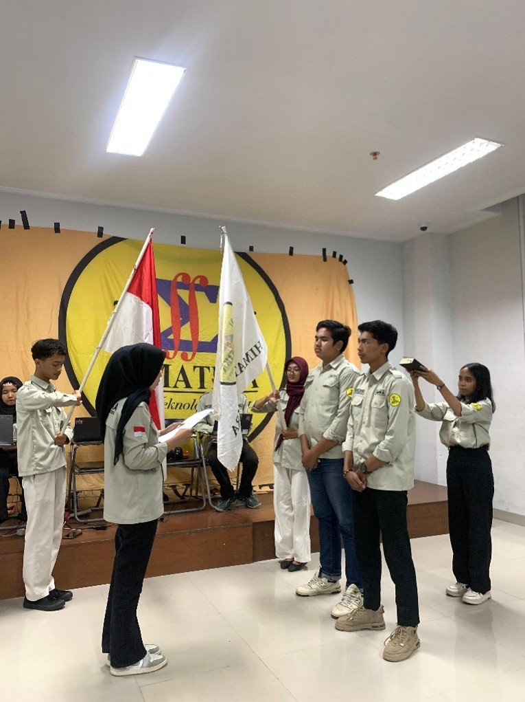
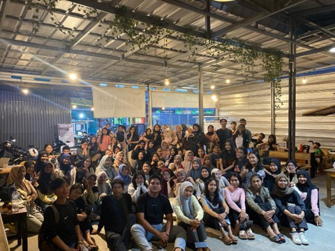
ACADEMIC & TEACHING EXPERIENCE
Time Series Analysis
Assisted students in visualizing and analyzing time series data using RStudio and ARIMA and SARIMA methods.


Introduction to Optimization
Guided students in solving linear programming problems using QM for Windows, Desmos, and LINGO.


Mathematics Basics
Assisted students in learning mathematics, provided practice exercises, and conducted evaluations of student assignments.
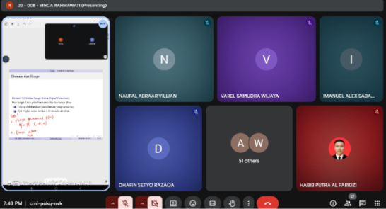
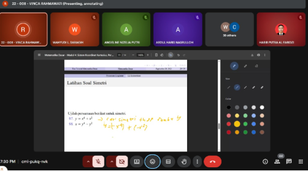
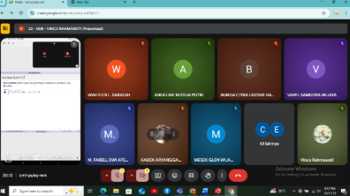
MY COMPETENCIES
Python
RStudio
Microsoft Excel
Microsoft Word & PowerPoint
Desmos & QM for Windows
Data Analysis
Statistical Analysis
Problem Solving
Communication
Teamwork & Creative Thinking
LEARNING & DEVELOPMENT
Digital Talent Scholarship 2026
Kementerian Komunikasi dan Digital
Open certificate PDF ↗MY WORK
Documentation of data analysis, mathematical modeling, and computational projects completed during my studies.
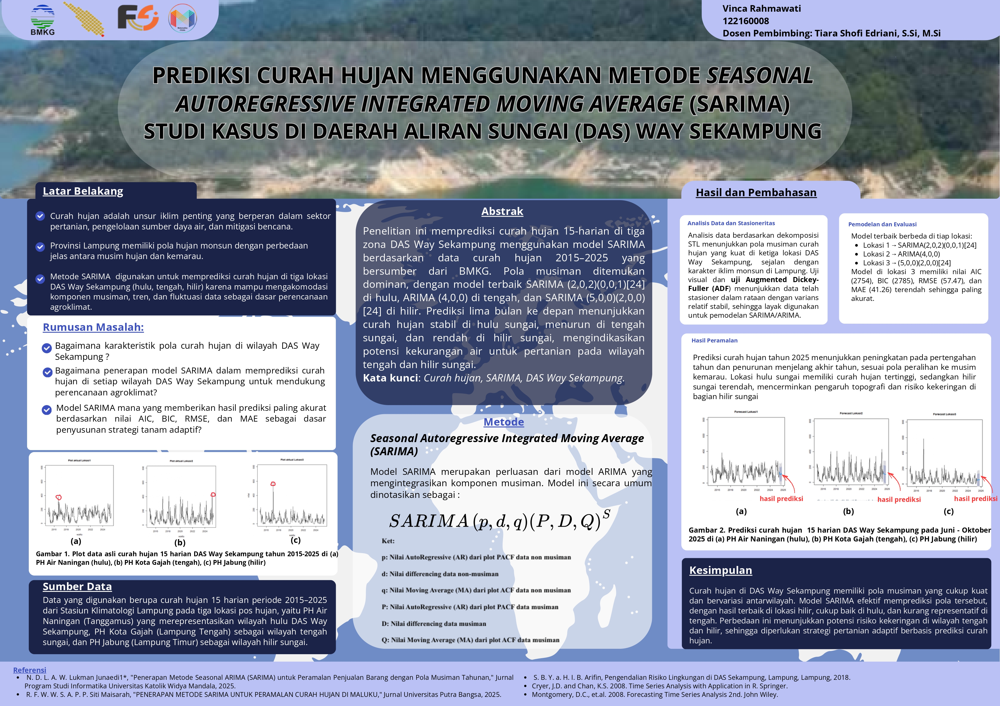
Applied the Seasonal Autoregressive Integrated Moving Average (SARIMA) method to analyze and forecast rainfall data as supporting information for agricultural planning.
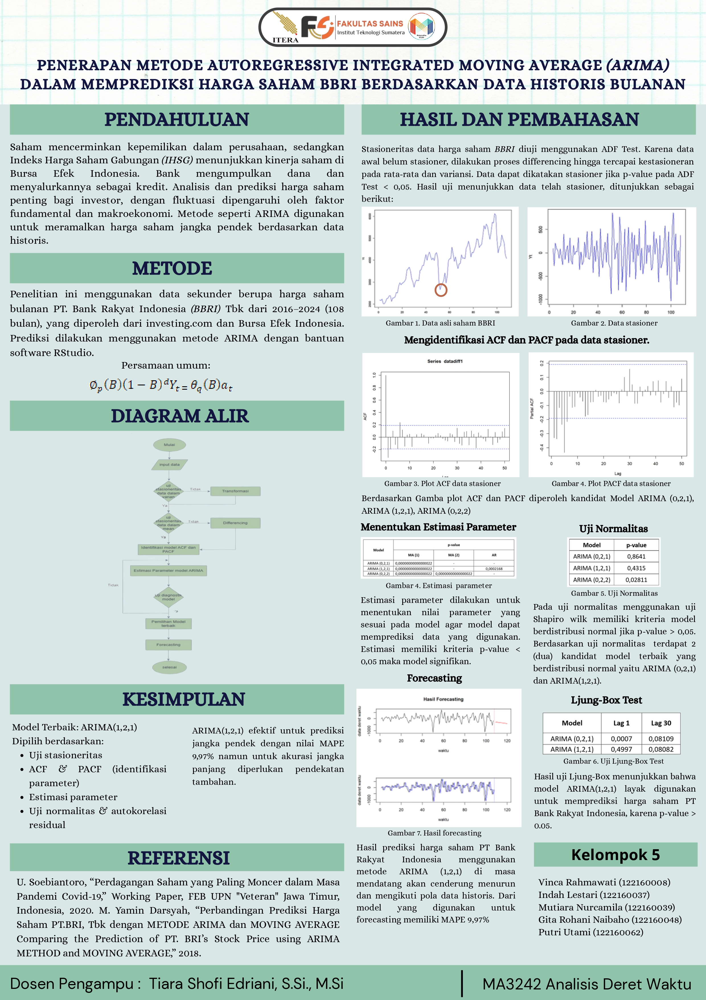
This project applies the Autoregressive Integrated Moving Average (ARIMA) method to analyze historical monthly stock prices of PT Bank Rakyat Indonesia (BBRI) from 2016 to 2024. The analysis aims to identify data patterns and forecast future stock prices using RStudio.
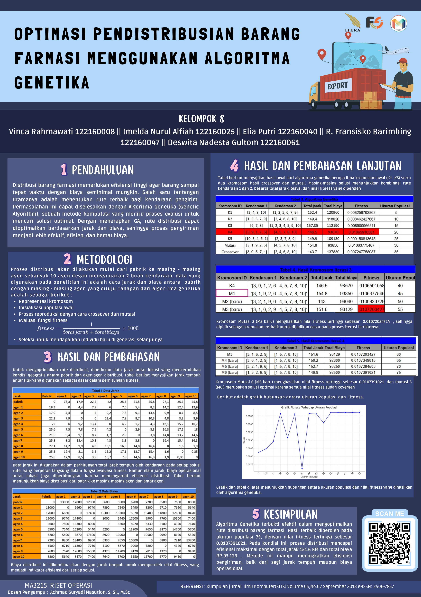
This project implements a Genetic Algorithm to optimize pharmaceutical distribution routes by minimizing total travel distance and operational costs. The optimization process considers delivery routes, vehicle capacity, and fitness evaluation to improve distribution efficiency.
GET IN TOUCH
Thank you for visiting my portfolio. Please feel free to contact me for further information or collaboration opportunities.